Luca Tortorelli · Astrofisico · Divulgatore scientifico
Modellizzare la popolazione di galassie nelle survey di nuova generazione.
Post-doc presso LMU Munich. Autore del libro di divulgazione Galassie, edito da Edizioni LaSerra. Disponibile nelle librerie italiane dal 12 dicembre 2025. Collaboratore freelance per Geopop.
Chi sono
Sono Luca Tortorelli, ricercatore post-doc presso l'Osservatorio astronomico di Monaco di Baviera. La mia ricerca scientifica verte sulla modellizzazione della popolazione di galassie nelle survey fotometriche e spettroscopiche per comprendere come si distribuiscono spazialmente le galassie nel cosmo, ingrediente essenziale per le analisi cosmologiche, e come evolvono le loro proprietà con l'età dell'Universo. Sono autore del modello di popolazione di galassie GalSBI-SPS che permette, con poche righe di codice Python, di generare cataloghi di galassie con annesse proprietà fisiche, morfologiche e fotometriche. Sono membro di alcuni tra i progetti astronomici più importanti esistenti, destinati a rivoluzionare la nostra comprensione del cosmo e delle galassie che vivono in esso: LSST, 4MOST e DESI. Sono anche interessato allo studio delle relazioni di scala delle galassie ellittiche negli ammassi di galassie a redshift intermedio.
Mi occupo di attività di insegnamento presso l'Osservatorio che includono la supervisione di tesi triennali e magistrali e l'insegnamento di corsi di astrofisica. Sin dai miei studi universitari ho partecipato ad attività di divulgazione scientifica ed attualmente, oltre alla pubblicazione del libro Galassie, collaboro come scrittore freelance per Geopop nella sezione "Spazio".
Ricerca
Forward-modelling & SBI
La mia ricerca si concentra sul forward-modelling delle survey di galassie e sullo sviluppo di metodi di simulation-based inference per l'evoluzione delle galassie e la cosmologia osservativa. Ho guidato la progettazione di modelli generativi basati su principi fisici che collegano le proprietà fisiche e morfologiche delle galassie a osservabili fotometrici e spettroscopici realistici. Durante il dottorato ho introdotto tecniche di forward-modelling e Approximate Bayesian Computation per inferire le proprietà della popolazione di galassie tenendo esplicitamente conto degli effetti di selezione e delle sistematiche osservative, ottenendo la prima misura delle funzioni di luminosità delle galassie mediante simulation-based inference. Nel mio lavoro post-dottorale ho esteso questo approccio alle applicazioni per le survey Stage IV, contribuendo alla modellizzazione delle distribuzioni di redshift e delle sistematiche osservative rilevanti per la cosmologia di precisione. Ho sviluppato e mantengo strumenti open-source come GalSBI-SPS e morphofit, utilizzati per simulare popolazioni di galassie ed estrarre parametri strutturali da dati di imaging a grande campo. Partecipo attivamente a grandi collaborazioni internazionali, tra cui LSST, 4MOST, DESI e PAUS, nelle quali ricopro ruoli di coordinamento e governance.
Evoluzione delle galassie
I miei temi di ricerca includono anche la misura delle proprietà fisiche delle galassie a partire da dati fotometrici e spettroscopici, con l'obiettivo di studiare le relazioni di scala della popolazione galattica. In Tortorelli+23 ho sviluppato e reso pubblico morphofit, un pacchetto Python altamente parallelizzabile per la misura automatizzata dei parametri strutturali delle galassie nelle survey di imaging a grande campo. Ho utilizzato morphofit in Tortorelli+18,23 per misurare i parametri strutturali delle galassie ellittiche (ETG) nei dati HST di tre ammassi di galassie massicci a redshift intermedio, studiando la dipendenza della relazione di Kormendy dalla selezione del campione e dalla lunghezza d'onda osservata. Sono inoltre esperto nell'uso di codici di SED fitting per misurare le proprietà delle popolazioni stellari delle galassie. In Tortorelli+21 ho utilizzato CIGALE per misurare masse stellari, tassi di formazione stellare, estinzioni e metallicità delle galassie PAUS e confrontarle con le stesse quantità misurate su dati simulati da GalSBI, verificando il realismo del nostro approccio di forward-modelling. La capacità di misurare in modo affidabile le proprietà delle galassie da dati fotometrici e spettroscopici sarà fondamentale per vincolare GalSBI-SPS con i dati informativi delle survey Stage IV, migliorare la stima dei parametri cosmologici e ottenere informazioni quantitative sull'evoluzione delle galassie.
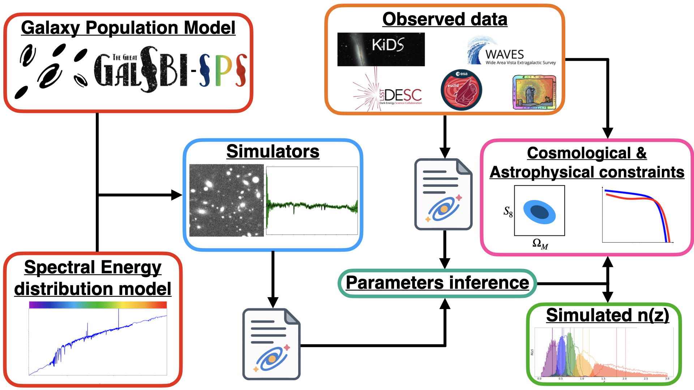
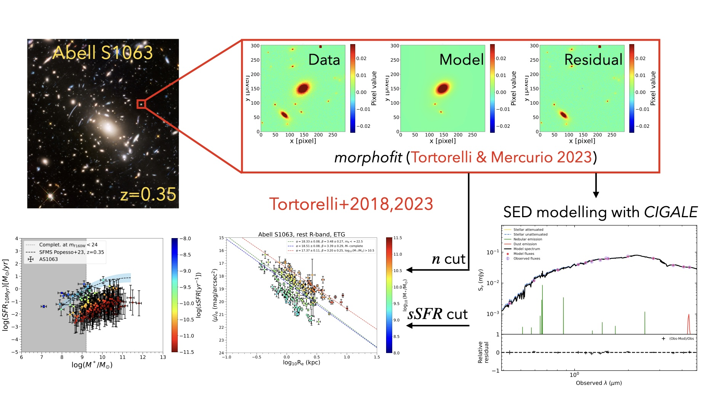
Codici & strumenti
Il (grande) GalSBI
GalSBI è un modello parametrico della popolazione di galassie vincolato dai dati osservativi mediante simulation-based inference (SBI). GalSBI è disponibile pubblicamente come pacchetto Python tramite pip e GitLab, e fornisce un'infrastruttura flessibile per generare cataloghi realistici di galassie e renderizzarli in immagini astronomiche tramite UFig. Il pacchetto permette di estrarre cataloghi realistici da due modelli di popolazione di galassie: GalSBI-SPS, basato sulla sintesi di popolazioni stellari, e la sua versione fenomenologica, denominata semplicemente GalSBI.
morphofit
morphofit è un pacchetto Python altamente parallelizzabile per la decomposizione strutturale delle immagini di galassie nelle moderne survey a grande campo. Il pacchetto è disponibile pubblicamente tramite pip e GitHub. È stato applicato con successo alla misura dei parametri strutturali delle galassie in immagini HST, JWST e KiDS; la sua modularità lo rende tuttavia adatto all'analisi di qualsiasi immagine fotometrica.
Collaborazioni
LSST DESC
Dal 2021 faccio parte della LSST Dark Energy Science Collaboration. Ho contribuito attivamente allo sviluppo dell'infrastruttura della survey come responsabile del contributo in-kind della LMU, dedicato all'implementazione di funzionalità di modellizzazione generativa nel Redshift Assessment Infrastructure Layer (RAIL), l'infrastruttura incaricata di produrre le distribuzioni individuali p(z) e quelle d'insieme N(z) con la precisione richiesta dalla cosmologia Stage IV. Partecipo scientificamente al gruppo di lavoro sui redshift fotometrici e contribuisco alla governance della collaborazione come membro del Collaboration Council e del Membership Committee.
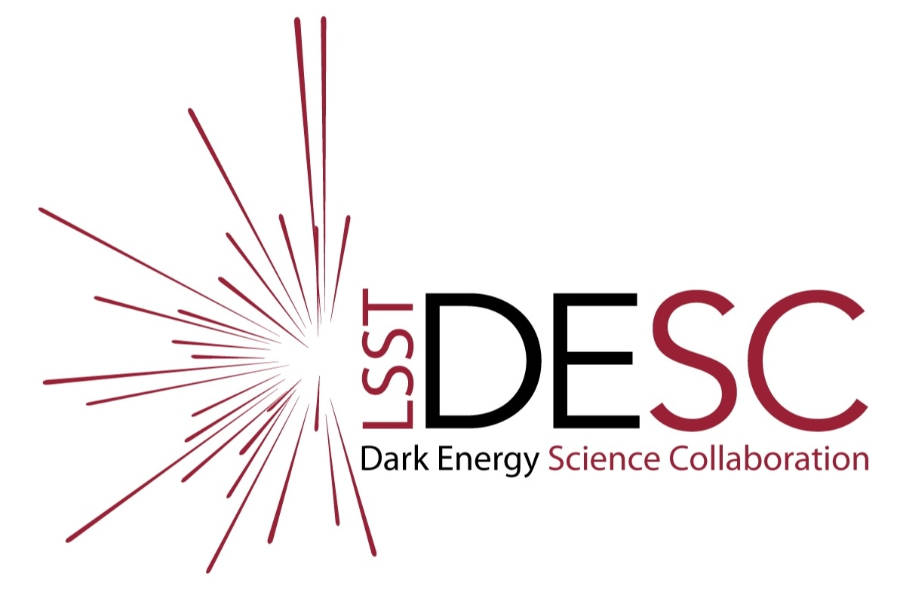
4MOST
Sono project scientist della survey 4MOST Complete Calibration of the Colour-Redshift Relation (4C3R2, Gruen+23). 4C3R2 è una survey extragalattica che mira a raccogliere redshift per un campione di galassie rappresentativo dello spazio dei colori esplorato dalle survey Stage IV, con l'obiettivo di migliorare la calibrazione dei redshift, una delle principali sistematiche osservative nella cosmologia della struttura a grande scala. 4C3R2 è una sotto-survey della survey WAVES (Driver+19), con la quale condivide il catalogo di input dei target KiDS-VIKING. In WAVES sono co-responsabile del Technical Working Group 2, incaricato di misurare le proprietà fisiche delle galassie a partire dai dati spettrofotometrici di 4MOST e KiDS-VIKING.
Pubblicazioni come primo autore
Per una lista completa, consulta la mia biblioteca ADS.
-
GalSBI-SPS: a stellar population synthesis-based galaxy population model for cosmology and galaxy evolution applications
Astronomy & Astrophysics, 2025 – GalSBI-SPS è un modello della popolazione di galassie basato sulla sintesi di popolazioni stellari, capace di generare cataloghi di proprietà fisiche, morfologiche e fotometriche per applicazioni di forward-modelling. I cataloghi vengono campionati gerarchicamente, a partire da redshift e masse stellari estratti da una funzione di massa stellare delle galassie (riquadro blu). Le storie di formazione stellare, le dispersioni di velocità, le proprietà morfologiche e i contributi degli AGN sono campionati condizionatamente a redshift e massa stellare (riquadri arancioni), mentre metallicità e ionizzazione del gas e proprietà della polvere dipendono anche dal tasso di formazione stellare (riquadri verdi). ProSpect (riquadro rosso) trasforma queste proprietà fisiche in SED e magnitudini.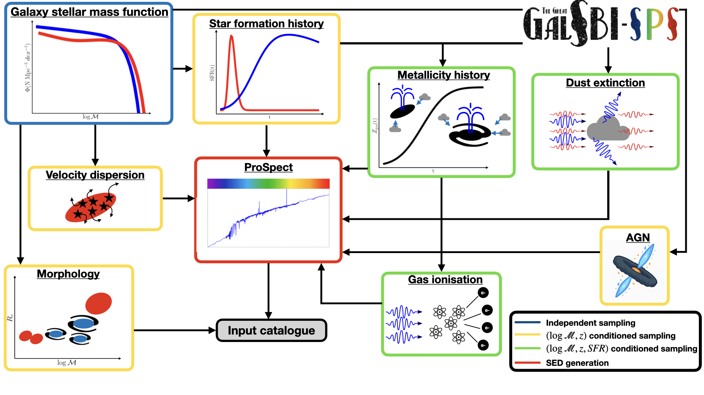
-
ProMage: fast galaxy magnitudes emulation combining SED forward-modelling and machine learning
Atti del simposio IAU “Universe AI: Exploring the Universe with Artificial Intelligence”, 2025 – ProMage è una rete neurale che emula il calcolo delle magnitudini nel sistema di riferimento dell'osservatore e in quello a riposo a partire dal pacchetto generativo di SED galattiche ProSpect. ProMage accelera il calcolo delle magnitudini di un fattore 10.000 rispetto a ProSpect, raggiungendo al contempo un'accuratezza relativa dell'ordine del per mille per il 99% delle sorgenti del test set nelle bande g, r, i, z, y di Hyper Suprime-Cam.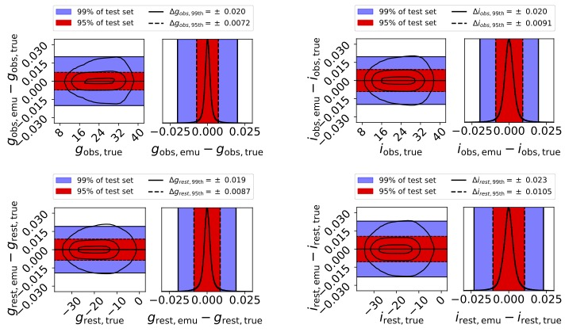
-
Impact of stellar population synthesis choices on forward modelling-based redshift distribution estimates
Astronomy & Astrophysics, 2024 – La sintesi di popolazioni stellari richiede numerose assunzioni dettagliate sulle componenti delle galassie, per le quali le scelte di modello o i valori dei parametri rimangono incerti. In questo lavoro abbiamo condotto un'analisi di sensibilità per quantificare l'impatto delle diverse assunzioni di modellizzazione delle SED sulle distribuzioni tomografiche N(z) ottenute mediante forward-modelling. Abbiamo mostrato che le incertezze sulla funzione iniziale di massa stellare, sugli AGN, sulla fisica del gas e sulle prescrizioni di attenuazione della polvere producono bias significativi nella media e nella dispersione delle N(z), superiori ai requisiti delle survey Stage IV.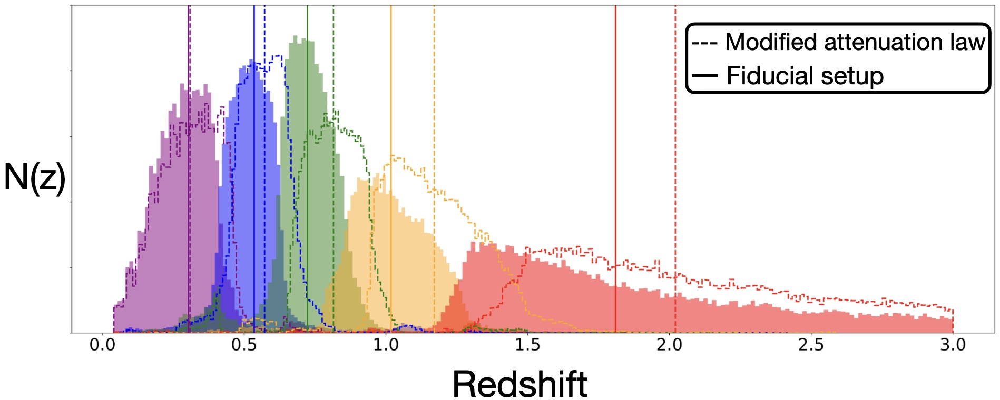
-
The Kormendy relation of early-type galaxies as a function of wavelength in Abell S1063, MACS J0416.1-2403, and MACS J1149.5+2223
Astronomy & Astrophysics, 2023 – In questo lavoro utilizziamo morphofit per analizzare la relazione di Kormendy nei tre ammassi Hubble Frontier Fields Abell S1063, a z = 0,348, MACS J0416.1-2403, a z = 0,396, e MACS J1149.5+2223, a z = 0,542, in funzione della lunghezza d'onda. È stata la prima analisi coerente della relazione di Kormendy delle galassie ellittiche su un intervallo di lunghezze d'onda così ampio a redshift intermedio. Abbiamo trovato che le pendenze aumentano gradualmente dall'ottico al vicino infrarosso in tutti e tre gli ammassi, mentre le intercette diventano più deboli a redshift inferiori a causa dell'invecchiamento passivo delle popolazioni stellari.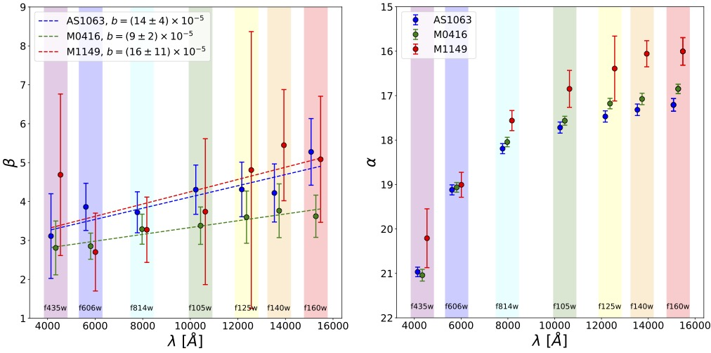
-
morphofit: An automated galaxy structural parameters fitting package
Frontiers in Astronomy and Space Sciences, 2023 – morphofit è un pacchetto Python altamente parallelizzabile per la stima robusta dei parametri strutturali delle galassie nelle moderne survey a grande campo. Utilizza codici ampiamente diffusi e affidabili, in particolare SExtractor e GALFIT. È stato ottimizzato e verificato sia in ambienti a bassa densità sia in ambienti affollati, nei quali il blending e la luce diffusa rendono particolarmente difficile la stima dei parametri strutturali. morphofit permette di adattare più componenti di brillanza superficiale a ciascuna galassia ed è disponibile su GitHub e PyPI.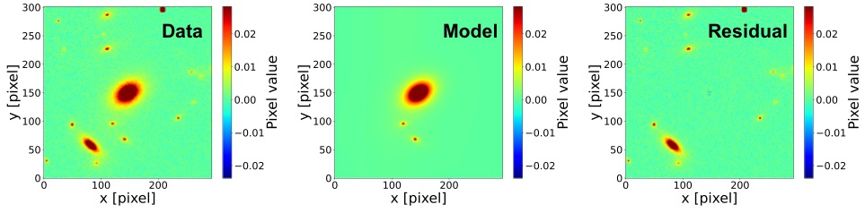
-
The PAU survey: measurement of narrow-band galaxy properties with approximate bayesian computation
Journal of Cosmology and Astroparticle Physics, 2021 – In questo lavoro abbiamo riprodotto mediante forward-modelling i dati a banda stretta della Physics of the Accelerating Universe Survey (PAUS), migliorando i vincoli sui coefficienti spettrali impiegati per creare le SED delle galassie nel modello di popolazione di Tortorelli et al. 2020. Abbiamo vincolato il modello tramite SBI, per la prima volta simultaneamente su più dataset, e verificato il posteriore confrontando le proprietà delle popolazioni stellari misurate in modo coerente sui dati e sulle simulazioni con CIGALE.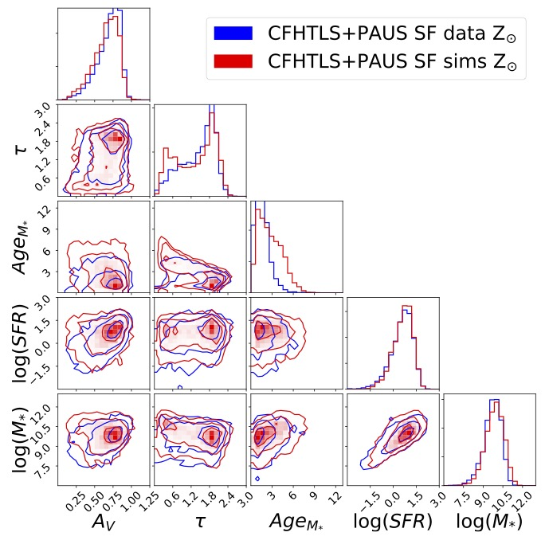
-
Measurement of the B-band Galaxy Luminosity Function with Approximate Bayesian Computation
Journal of Cosmology and Astroparticle Physics, 2020 – Questo lavoro rappresenta la prima misura in letteratura delle proprietà della popolazione di galassie ottenuta combinando forward-modelling e SBI. Utilizziamo l'Approximate Bayesian Computation (ABC) per vincolare i parametri del modello di popolazione nelle simulazioni e misurare la funzione di luminosità delle galassie blu e rosse in funzione del redshift.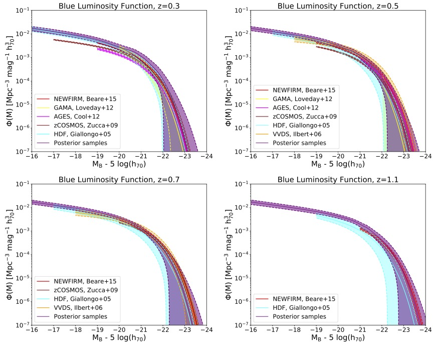
-
The PAU Survey: a forward modeling approach for narrow-band imaging
Journal of Cosmology and Astroparticle Physics, 2018 – In questo lavoro abbiamo verificato il nostro modello fenomenologico della popolazione di galassie riproducendo mediante forward-modelling la fotometria nelle 40 bande strette della PAU Survey. Dal confronto delle componenti principali determinate sui dati e sulle simulazioni abbiamo riscontrato un buon accordo con le osservazioni, nonostante il modello non fosse ancora stato vincolato sui dati mediante SBI.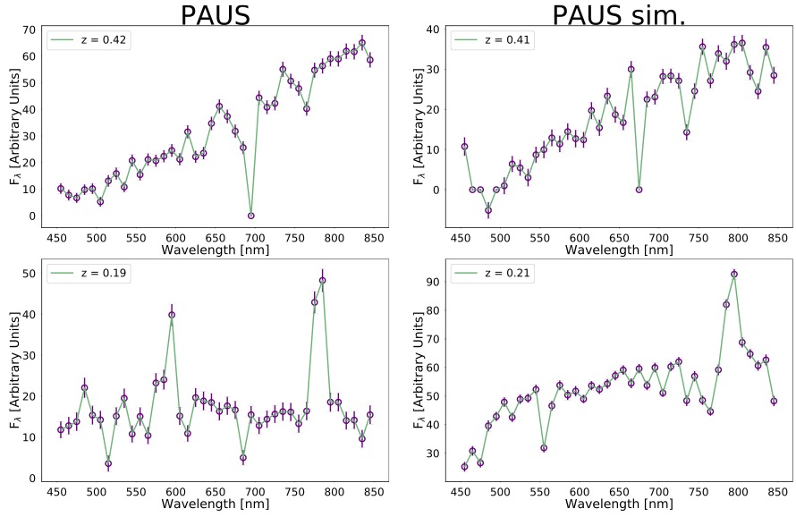
-
The Kormendy relation of galaxies in the Frontier Fields clusters: Abell S1063 and MACS J1149.5+2223
Monthly Notices of the Royal Astronomical Society, 2018 – In questo lavoro abbiamo analizzato la relazione di Kormendy negli ammassi Frontier Fields Abell S1063 e MACS J1149.5+2223. Abbiamo definito e confrontato quattro criteri di selezione delle galassie ellittiche: indice di Sérsic, ispezione visuale, colore e proprietà spettrali. Il confronto mostra che la selezione del campione può influenzare la stima dei parametri della relazione. La relazione ottenuta per le ETG è pienamente coerente con quelle delle galassie classificate come ellittiche e passive, mentre la pendenza del campione rosso è soltanto marginalmente compatibile con quelle degli altri campioni.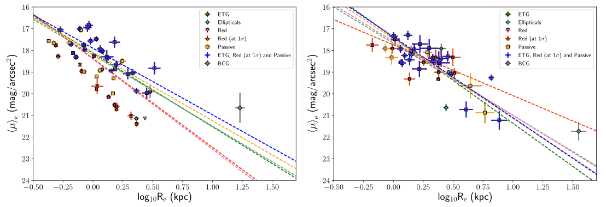
Divulgazione
Il mio libro di divulgazione Galassie
Sono autore del libro di divulgazione Galassie, pubblicato da Edizioni LaSerra. Il libro è disponibile nelle librerie italiane a partire dal 12 dicembre 2025 ed è anche acquistabile online su:
Amazon · Mondadori · Feltrinelli · IBS
Collaborazione con Geopop
Da marzo 2023 collaboro con la più grande realtà divulgativa d'Italia, Geopop, come scrittore freelance. Sono autore di oltre 300 articoli a tema spazio e astronomia, un'esperienza di scrittura divulgativa, di cui sono immensamente grato, che ho cercato di trasferire nel mio libro Galassie.
Contatti
Il modo migliore per contattarmi è via email. Sono disponibile a discutere di ricerca, insegnamento, collaborazioni e progetti di divulgazione.